Selamat Datang di Tokyo
Tokyo adalah ibu kota Jepang yang terkenal sebagai kota modern dengan teknologi maju, tetapi tetap memiliki budaya dan tradisi yang kuat.
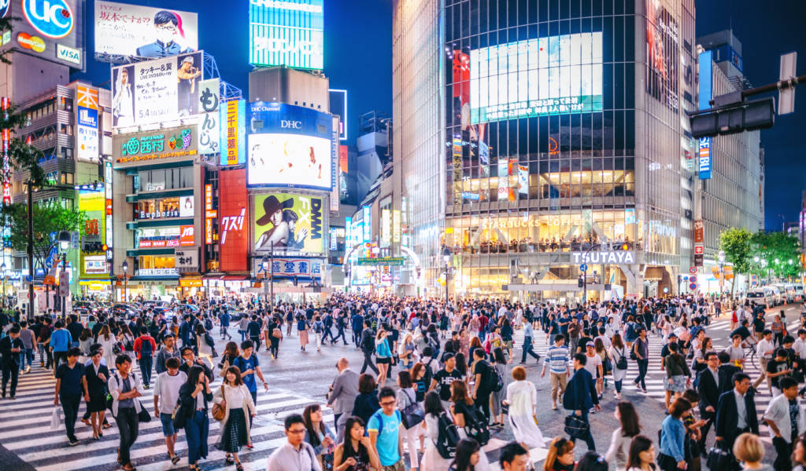
Di Tokyo, wisatawan dapat menikmati gedung-gedung modern, kuil bersejarah, taman yang indah, pusat perbelanjaan, serta berbagai makanan khas Jepang.
Tempat Wisata Populer
Tokyo memiliki banyak tempat wisata menarik yang dapat dikunjungi oleh wisatawan dari berbagai negara.
- Tokyo Skytree
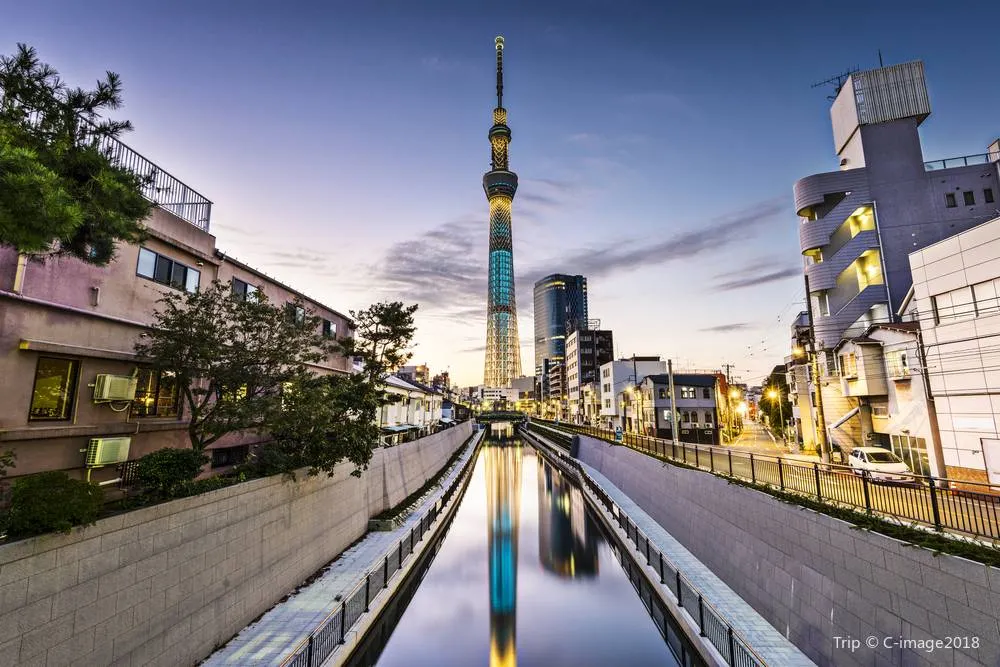
- Shibuya Crossing
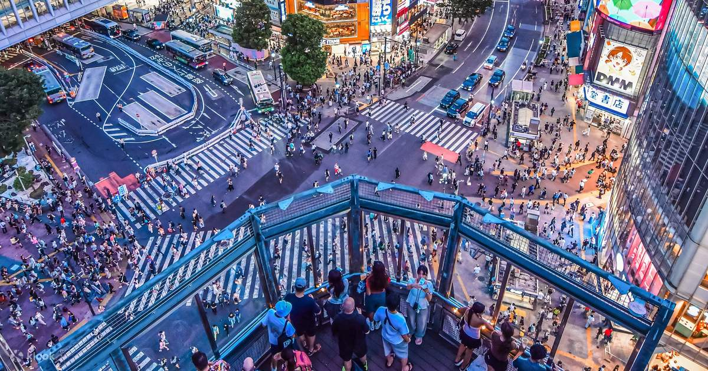
- Senso-ji Temple
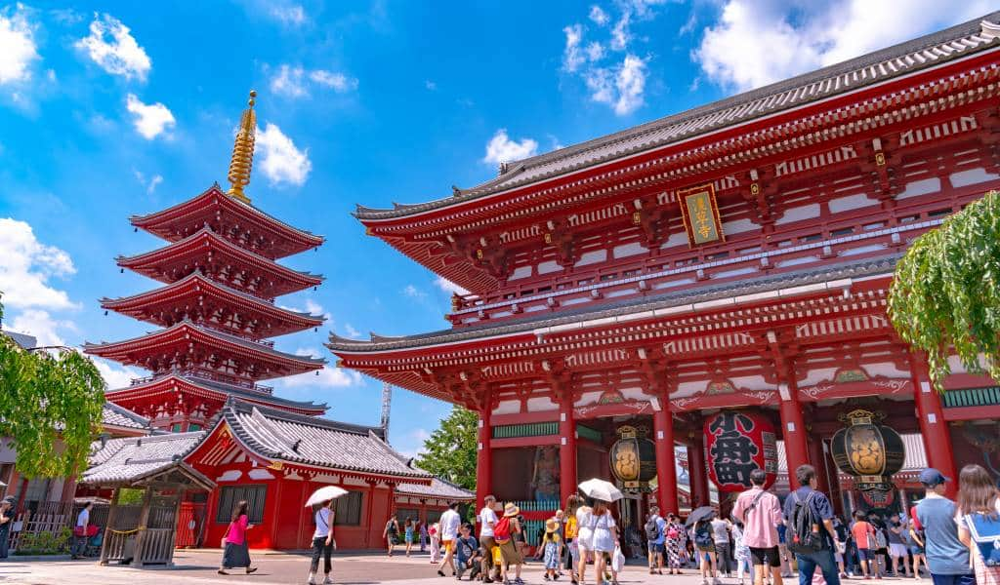
- Tokyo Disneyland
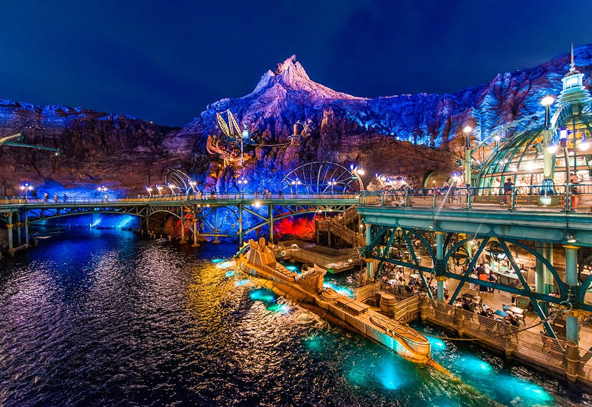
- Meiji Shrine
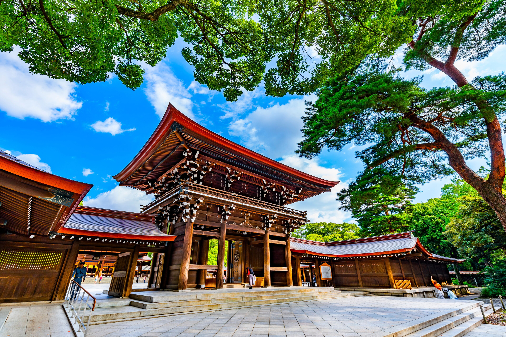
- Tokyo Tower
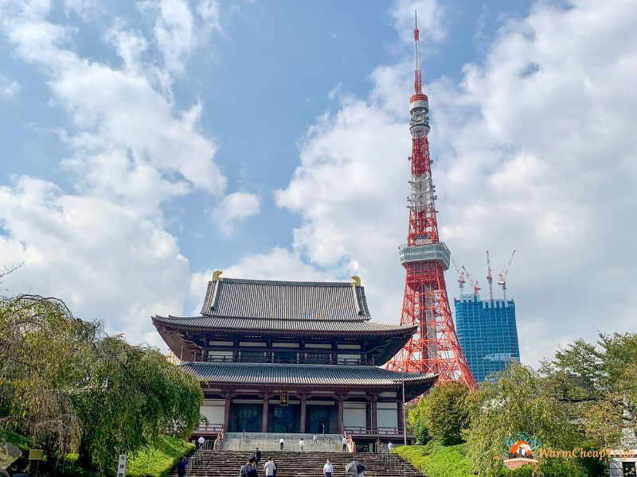
Kuliner Khas Tokyo
Selain tempat wisata, Tokyo juga terkenal dengan berbagai macam makanan Jepang yang lezat dan menarik untuk dicoba.
- Sushi
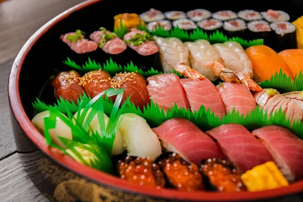
- Ramen
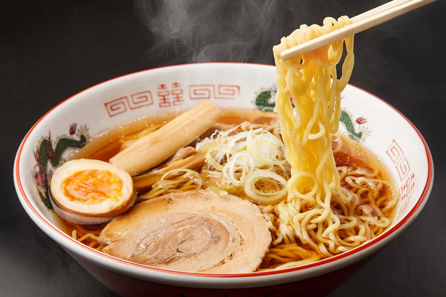
- Tempura
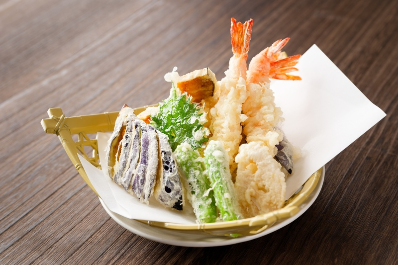
- Takoyaki
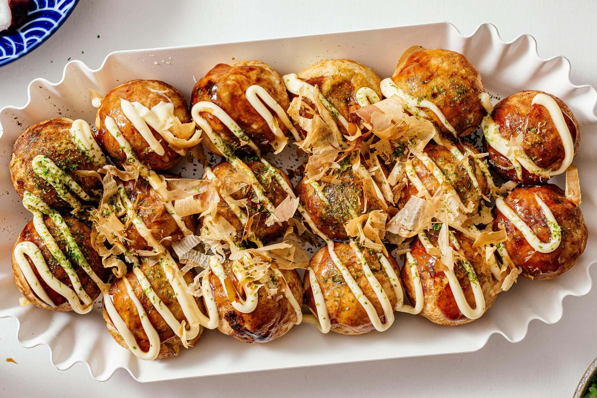
- Okonomiyaki
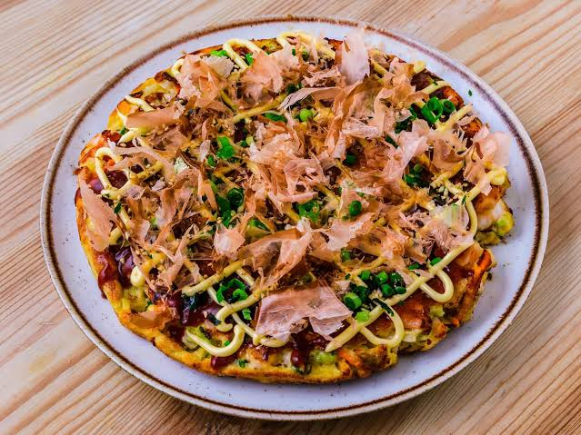
Tips Berwisata di Tokyo
Agar perjalanan di Tokyo lebih nyaman, wisatawan sebaiknya mempersiapkan beberapa hal sebelum berangkat.
- Gunakan transportasi umum seperti kereta.
- Siapkan kartu atau metode pembayaran yang sesuai.
- Pelajari beberapa kata dasar bahasa Jepang.
- Hormati aturan dan budaya masyarakat Jepang.
- Buat daftar tempat yang ingin dikunjungi.